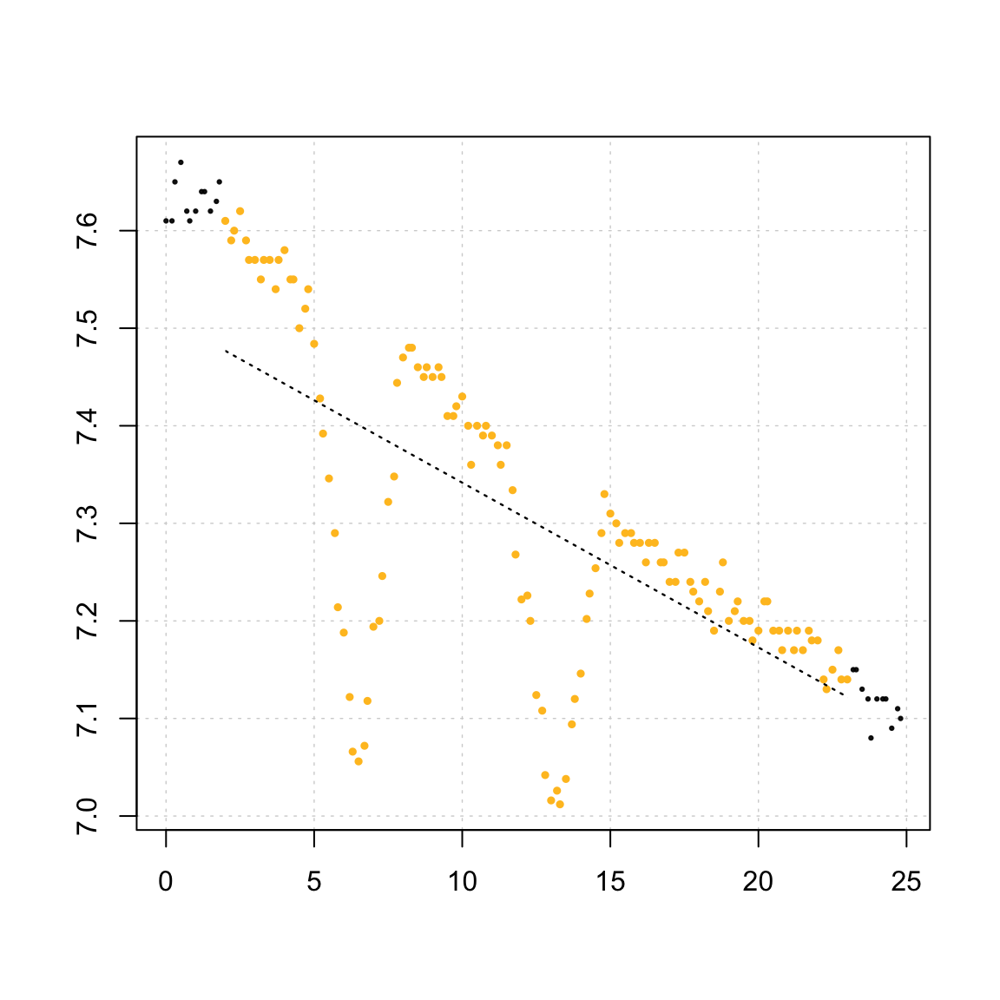

Two-point analyses
In some analyses we may want to use only two datapoints of oxygen concentration separated by a known time period to calculate a rate. This could result from closed-bottle respirometry, where only the initial and final oxygen concentrations are recorded, in situations of periodic and irregular oxygen monitoring or sampling, or because experimental problems caused erroneous or suspect data to be recorded during an experiment. This approach of course comes with the assumption that rates are relatively constant over the relevant time period, or alternatively the investigator is not particularly interested in how rate may have fluctuated in the intervening time, but rather the total flux and therefore total rate.
While the linear regression approach of respR may still provide valid rate estimates, this may not work in the case of irregular data recordings, and the two-point output of calc_rate allows useable rates to be determined from sparse or partially erroneous data via this approach.
Two-point data
Simple two-point data can be entered into calc.rate in a 2x2 data frame (here created via typical R syntax):
two_pt_data <- data.frame(time = c(0, 10), o2 = c(8.5, 6.3))
two_pt_data
#> time o2
#> 1 0 8.5
#> 2 10 6.3two_pt_result <- calc_rate(two_pt_data)
summary(two_pt_result)
#> Summary:
#> intercept_b0 rate_b1 rsq row endrow time endtime oxy endoxy rowlength
#> 1: 8.5 -0.22 1 1 2 0 10 8.5 6.3 1
#> timelength rate_twopoint
#> 1: 10 -0.22The two-point rate can be seen at the end of the summary object. With only two datapoints, it will obviously be equal to the rate in the linear regression method. However, it can be extracted directly:
two_pt_result$rate_2pt
#> [1] -0.22Working around erroneous data
More useful is using two-point calculations to work around cases of partially erroneous data. Often we can still extract perfectly valid rates as long as the investigator knows some of the data contains the true oxygen values. In the following example we will use the urchin.rd data to simulate a dataset where interference has caused regions of erroneous data, but where the intitial and end conditions are known to be reliable recordings.
## extract some rows of time and one O2 column
urchin_mod <- urchins.rd[1:150, c(1, 15)]
## simulate sensor dropout
urchin_mod[30:49, 2] <- urchin_mod[30:49, 2] - c(seq(0.02, 0.46, 0.046), rev(seq(0.02,
0.46, 0.046)))
urchin_mod[70:89, 2] <- urchin_mod[70:89, 2] - c(seq(0.02, 0.36, 0.036), rev(seq(0.02,
0.36, 0.036)))inspect_data(urchin_mod)
Here we can see our two erroneous regions. We could remove these sections, or only use the lower section of the data, but we can also use the subsetting operators of calc_rate to select data that starts and ends where we know valid O₂ recordings were made:
two_pt_result <- calc_rate(urchin_mod, from = 2, to = 23, by = "time")
summary(two_pt_result)
#> Summary:
#> intercept_b0 rate_b1 rsq row endrow time endtime oxy endoxy
#> 1: 7.510606 -0.01689257 0.448 13 139 2 23 7.61 7.14
#> rowlength timelength rate_twopoint
#> 1: 126 21 -0.02238095We can clearly see the linear regression method substantially underestimates the rate because it is skewed downwards. In this case, the two-point output will clearly be a better estimate of the rate of this specimen.
Processing two-point rates
Two-point rates can be passed to adjust_rate for background corrections, and convert_rate for conversion to the desired output units. However, if using an object of class calc_rate they must be specifically called using $rate_2pt or, by default, the adjustment or conversion will operate on the linear regression derived rate.
adjust_rate(two_pt_result$rate_2pt, by = -0.001)
#> Note: please consider the sign of the value while correcting the rate.
#> Input rate: -0.02238095
#> Adjustment: -0.001
#> Adj. rate: -0.02138095
convert_rate(two_pt_result$rate_2pt, o2.unit = "mg/L", time.unit = "h", output.unit = "mg/h/g",
volume = 25, mass = 0.2)
#> Input:
#> [1] -0.02238095
#> [1] "mg/L" "hour"
#> Output:
#> [1] -0.002797619
#> [1] "mg/hour/g"They can alternatively be entered manually:
convert_rate(-0.0224, o2.unit = "mg/L", time.unit = "h", output.unit = "mg/h/g",
volume = 25, mass = 0.2)
#> Input:
#> [1] -0.0224
#> [1] "mg/L" "hour"
#> Output:
#> [1] -0.0028
#> [1] "mg/hour/g"